From Learning to Rank to Unsupervised Translation: towards a deep learning archaeologist ?
This blog post contains an introduction to Unsupervised Bilingual Alignment and Multilingual Alignment. We also go through the theoretical framework behind Learning to Rank and discuss how it might help produce better alignments in a Semi-Supervised fashion. This post was written with Paul Garnier and was initially supposed to explore the impact of learning to rank to Unsupervised Translation. We both hope that this post will serve as a good introduction to anyone interested in this topic.
Introduction
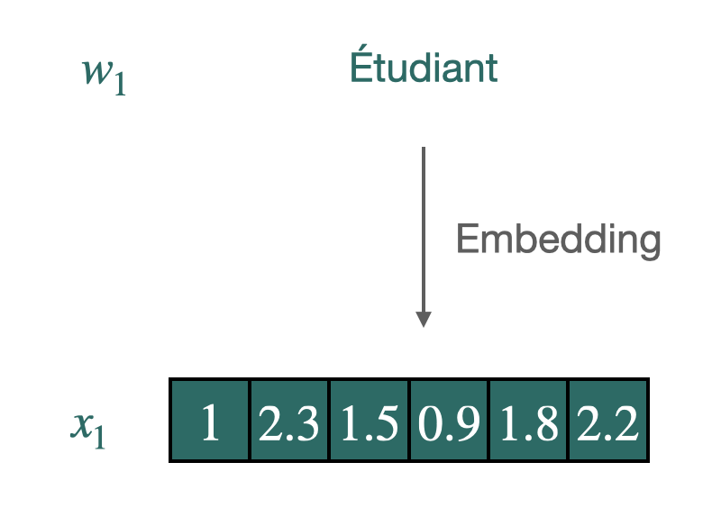
Word vectors are conceived to synthesize and quantify semantic nuances, using a few hundred coordinates. These are generally used in downstream tasks to improve generalization when the amount of data is scarce. The widespread use and successes of these "word embeddings" in monolingual tasks have inspired further research on the induction of multilingual word embeddings for two or more languages in the same vector space.
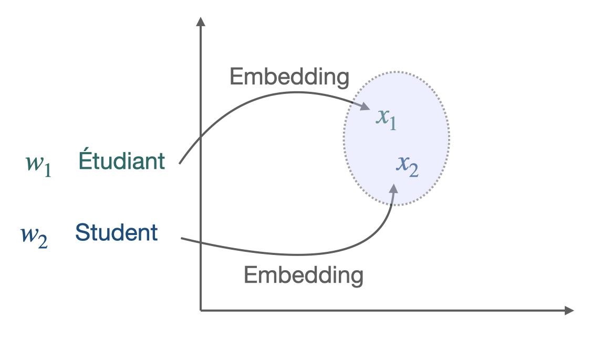
The starting point was the discovery [[4]](https://papers.nips.cc/paper/5021-distributed-representations-of-words-and-phrases-and-their-compositionality.pdf) that word embedding spaces have similar structures across languages, even when considering distant language pairs like English and Vietnamese. More precisely, two sets of pre-trained vectors in different languages can be aligned to some extent: good word translations can be produced through a simple linear mapping between the two sets of embeddings. For example, learning a direct mapping between Italian and Portuguese leads to a word translation accuracy of 78.1% with a nearest neighbor (NN) criterion.
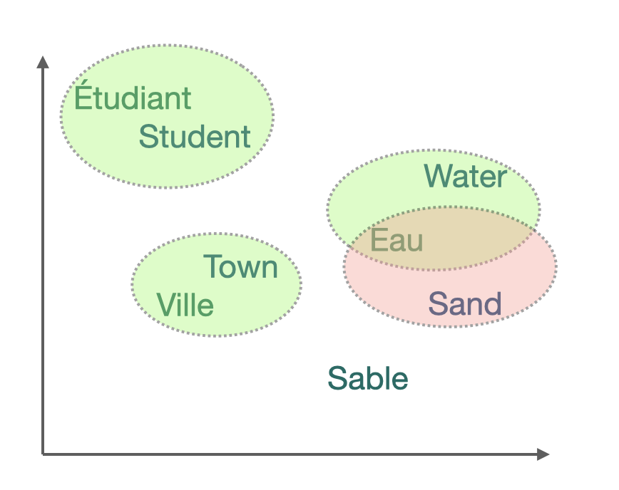
Embeddings of translations and words with similar meaning are close (geometrically) in the shared cross-lingual vector space. This property makes them very effective for cross-lingual Natural Language Processing (NLP) tasks. The simplest way to evaluate the result is the Bilingual Lexicon Induction (BLI) criterion, which designs the dictionary's percentage that can be correctly induced. Thus, BLI is often the first step towards several downstream tasks such as Part-Of-Speech (POS) tagging, parsing, document classification, language genealogy analysis, or (unsupervised) machine translation.
These common representations are frequently learned through a two-step process, whether in a bilingual or multilingual setting. First, monolingual word representations are learned over large portions of text; these pre-formed representations are actually available for several languages and are widely used, such as the Fasttext Wikipedia. Second, a correspondence between languages is learned in three ways: in a supervised manner, if parallel dictionaries or data are available to be used for supervisory purposes, with minimal supervision, for example, by using only identical strings, or in a completely unsupervised manner.
It is common practice in the literature on the subject to separate these two steps and not to address them simultaneously in a paper. Indeed, measuring the algorithm’s efficiency would lose its meaning if the corpus of vectors is not identical at the beginning.
Concerning the second point, although three different approaches exist, they are broadly based on the same ideas: the goal is to identify a subset of points that are then used as anchors points to achieve alignment. In the supervised approach, these are the words for which the translation is available. In the semi-supervised approach, we will gradually try to enrich the small initial corpus to have more and more anchor points. The non-supervised approach differs because there is no parallel corpus or dictionary between the two languages. The subtlety of the algorithms will be to release a potential dictionary and then to enrich it progressively.
We will focus on this third approach. Although it is a less frequent scenario, it is of great interest for several reasons. First of all, from a theoretical point of view, it provides a practical answer to a fascinating problem of information theory: given a set of texts in a totally unknown language, what information can we retrieve? The algorithms we chose to implement contrast neatly with the classical approach used until now. Finally, for very distinct languages or languages that are no longer used, the common corpus can indeed be very thin.
Many developments have therefore taken place in recent years in this field of unsupervised bilingual lexicon induction. One of the recent discoveries is the idea that using information from other languages during the training process helps improve translating language pairs.
This discovery led us to formulate the problem as follows: is it possible to gain experience in the progressive learning of several languages? In other words, how can we make fair use of the learning of several acquired languages to learn a new one? This new formulation can lead one to consider the lexicon induction as a ranking problem.
We will proceed as follows: First, we will outline state of the art and the different techniques used for unsupervised learning in this context. In particular, we will explain the Wasserstein Procrustes approach for bilingual and multi alignment. We then emphasize the lexicon induction given the alignment. We then present the Learning to Rank key concepts. We then discuss a method using learning to rank for lexicon induction, and then present some experimental results.
Unsupervised Bilingual Alignment
This section provides a brief overview of unsupervised bilingual alignment methods to learn a mapping between two sets of embeddings. The majority are divided into two stages: the actual alignment and lexicon induction, given the alignment. Even if the lexicon induction is often taken into account when aligning (directly or indirectly, through the loss function), this distinction is useful from a theoretical perspective.
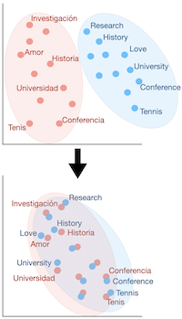
Historically, the problem of word vector alignment has been formulated as as a quadratic problem. This approach, resulting from the supervised literature, is then allowed to presume the absence of lexicon without modifying the framework. That is why we will deal with it first in what follows.
Orthogonal Procrustes Problem
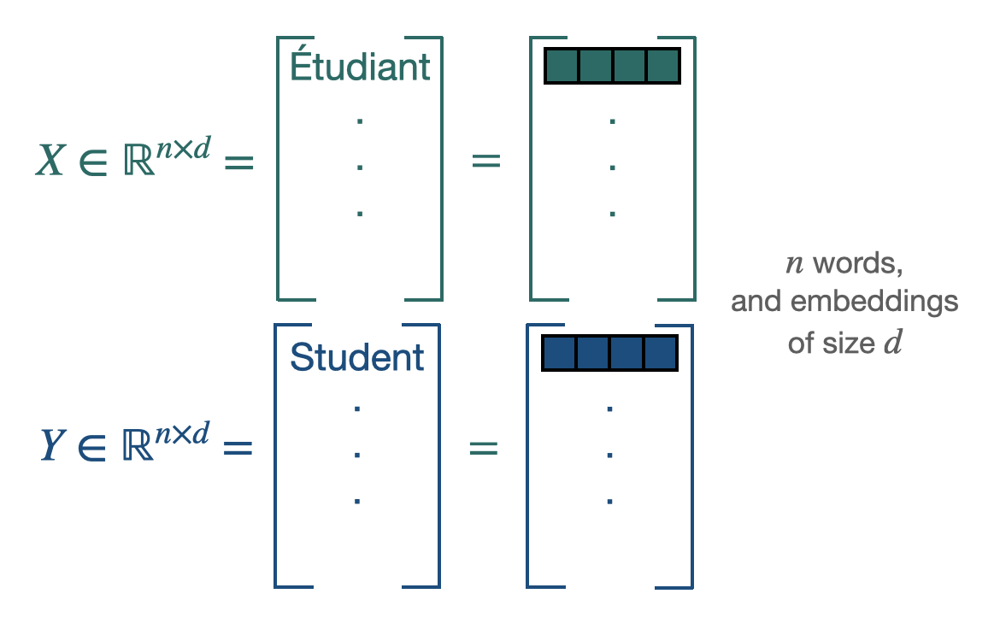
Procustes is a method that aligns points if given the correspondences between them (supervised scenario). $\mathbf{X} \in \mathbb{R}^{n \times d}$ and $\mathbf{Y} \in \mathbb{R}^{n \times d}$ are the two sets of word embeddings or points and we suppose, as previously said, that we know which point **X** corresponds to which point **Y**. This leads us to solve the following least-square problem of optimization, looking for the **W** matrix performing the alignment [[5]](https://arxiv.org/pdf/1805.11222.pdf):
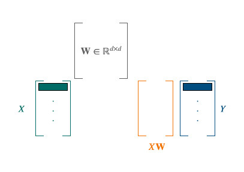
We have access to a closed form solution with a cubic complexity. Restraining **W** to the set of orthogonal matrices $\mathcal{O}_{d}$, improves the alignments for two reasons: it limits overfitting by reducing the size of the minimization space and allows to translate the idea of keeping distances and angles, resulting from the similarity in the space structure. The resulting problem is known as Orthogonal Procrustes. It also admits a closed-form solution through a singular value decomposition (cubic complexity).
Thus, if their correspondences are known, the translation matrix between two sets of points can be inferred without too many difficulties. The next step leading to unsupervised learning is to discover these point correspondences using Wasserstein distance.
Wasserstein Distance
In a similar fashion, finding the correct mapping between two sets of word can be done by solving the following minimization problem:
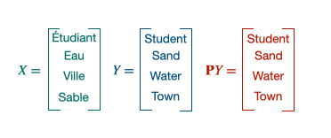
$\mathcal{P}_{n}$ containing all the permutation matrices, the solution of the minimization, $P_t$ will be an alignment matrix giving away the pair of words. This 1 to 1 mapping can be achieved thanks to the Hungarian algorithm. It is equivalent to solve the following linear program:
The combination of the Procustes- Wasserstein minimization problem is the following:
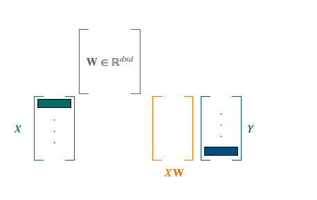
To solve this problem, the approach of [5] was to use a stochastic optimization algorithm. As solving separately those 2 problems led to bad local optima, their choice was to select a smaller batch of size b, and perform their minimization algorithm on these sub-samples. The batch is playing the role of anchors points. Combining this with a convex relaxation for an optimal initialization, it leads to the following algorithm:
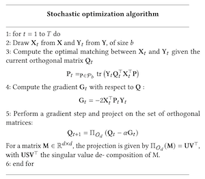
Other unsupervised approaches
Other approaches exist, but they are currently less efficient than the one described above for various reasons: complexity, efficiency… We will briefly describe the two main ones below.
Optimal transport:
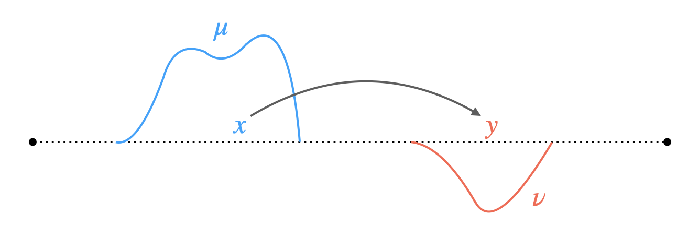
Optimal transport [6] formalizes the problem of finding a minimum cost mapping between two word embedding sets, viewed as discrete distributions. More precisely, they assume the following distributions:
and look for a transportation map realizing:
where the cost $c(\mathbf{x}, T(\mathbf{x}))$ is typically just $| T(\mathbf{x}) - \mathbf{x} |$ and $T_{\sharp} \mu = \nu$ implies that the source points must exactly map to the targets.
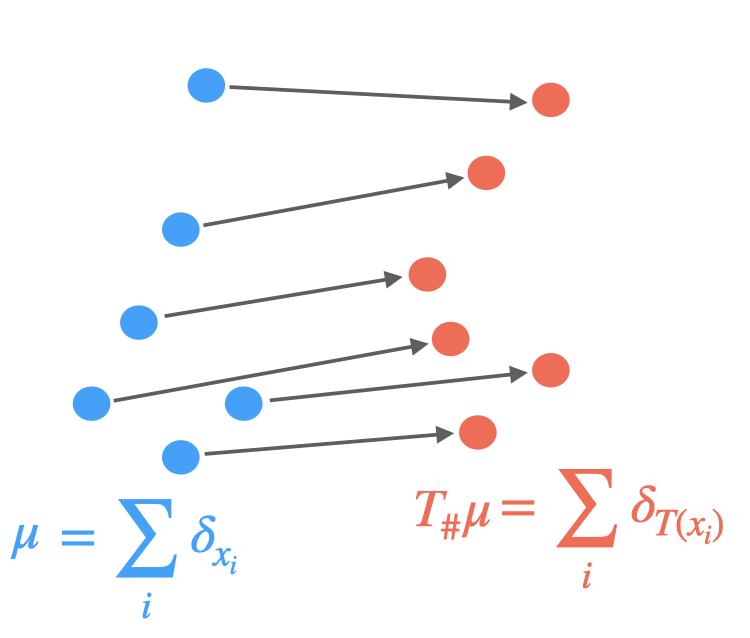
Yet, this transportation not always exist and a relaxation is used. Thus, the discrete optimal transport (DOT) problem consists of finding a plan $\Gamma$ that solves
where $\mathbf{C} \in \mathbb{R}^{n \times m}$, e.g., $C_{i j}=\left|\mathbf{x}^{(i)}-\mathbf{y}^{(j)}\right|$ is the cost matrix and the total cost induced by $\Gamma$ is:
where $\Gamma$ belongs to the polytope:
A regularization is usually added, mostly through the form of an entropy penalization:
Some works [7] are based on these observations and then propose algorithms, effective in our case, because they adapt to the particularities of word embeddings. However, we notice that even if the efficiency is higher, the complexity is redibitive and does not allow large vocabularies. Moreover, the research is more oriented towards improving the algorithm described above with optimal transport tools rather than towards a different path. This is why we will not focus in particular on this track. We should, however, note the use of Gromov-Wasserstein distance [8], which allows calculating the distance between languages innovatively, although they are in distinct spaces, enabling to compare the metric spaces directly instead of samples across the spaces.
Adversarial Training: Another popular alternative approach derived from the literature on generative adversarial network [9] is to align point clouds without cross-lingual supervision by training a discriminator and a generator [10]. The discriminator aims at maximizing its ability to identify the origin of an embedding. The generator of W aims at preventing the discriminator from doing so by making WX and Y as similar as possible.
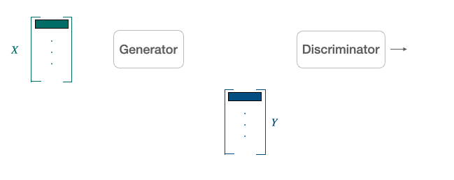
They note $\theta_{D}$ the discriminator parameters and consider the probability $P_{\theta_{D}}(\text { source }=1 | z)$ that a vector $z$ is the mapping of a source embedding (as opposed to a target embedding) according to the discriminator. The discriminator loss can then be written as:
On the other hand, the loss of the generator is:
For every input sample, the discriminator and the mapping matrix $W$ are trained successively with stochastic gradient updates to minimize $\mathcal{L}_W$ and $\mathcal{L}_D$.
Yet, papers [10] on the subject show that, although innovative, this framework is more useful as a pre-training for the classical model than as a full-fledged algorithm.
Multilingual alignment
A natural way to improve the efficiency of these algorithms is to consider more than 2 languages. Thus, when it comes to aligning multiple languages together, two principle approaches quickly come to mind and correspond to two optimization problems:
- Align all languages to one pivot language, often English, without considering the loss function other alignments. This leads to low complexity but also to low efficiency between the very distinct language, forced to transit through English.
- Align all language pairs by putting them all in the loss function, without giving importance to any one in particular. If this improves the efficiency of the algorithm, the counterpart is in the complexity, which is very important because it is quadratic in the number of languages.
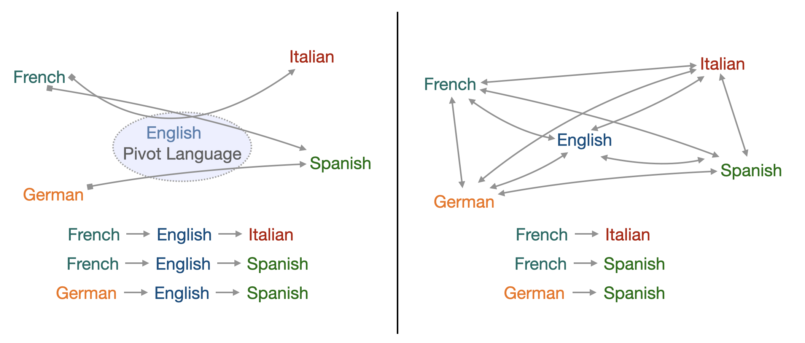
A trade-off must therefore be found between these two approaches.
Let us consider $\mathbf{X}_i$ word embeddings for each language $i$, $i=0$ can be considered as the reference language, $\mathbf{W}_i$ is the mapping matrix we want to learn and $\mathbf{P}_i$ the permutation matrix. The alignment of multiple languages using a reference language as pivot can be resumed by the following problem:
As said above, although this method gives satisfying results concerning the translations towards the reference language, it provides poor alignment for the secondary languages between themselves.
Therefore an interesting way of jointly aligning multiple languages to a common space has been brought through by Alaux et al. [11].
The idea is to consider each interaction between two given languages, therefore the previous sum becomes a double sum with two indexes i and j. To prevent the complexity from being to high and to keep track and control over the different translations, each translation between two languages is given a weight $\alpha_{i j}$:
The choice of these weights depends on the importance we want to give to the translation from language i to language j.
The previous knowledge we have on the similarities between two languages can come at hand here, for they will have a direct influence on the choice of the weight. However, choosing the appropriate weights can be uneasy. For instance, giving a high weight to a pair of close languages can be unnecessary, and doing the same for two distant languages can be a waste of computation. To effectively reach this minimization, they use an algorithm very similar to the stochastic optimization algorithm described above.
At the beginning, we wanted to use this algorithm to incorporate exogenous knowledge about languages to propose constants $\alpha_{i j}$ more relevant and leading to greater efficiency. Different techniques could result in these parameters: from the mathematical literature such as the Gromov-Wasserstein distance evoked above or from the linguistic literature, using the etymological tree of languages to approximate their degree of proximity or even from both. In the article implementing this algorithm, it is specified that the final $\alpha_{i j}$ is actually very simple: N if we consider a link to the pivot or 1 otherwise. Practical simulations have also led us to doubt the efficiency of this idea. This is why we decided to focus on the idea below that seemed more promising rather than on multialignments.
Word translation as a retrieval task: Post-alignment Lexicon Induction
The core idea of the least-square problem of optimization in Wasserstein Procrustes is to minimize the distance between a word and its translation. Hence, given the alignment, the inference part first consisted of finding the nearest neighbors (NN). Yet, this criterion had a major issue: Nearest neighbors are by nature asymmetric: y being a K-NN of x does not imply that x is a K-NN of y. In high-dimensional spaces, this leads to a phenomenon that is detrimental to matching pairs based on a nearest neighbor rule: some vectors, called hubs, are with high probability nearest neighbors of many other points, while others (anti-hubs) are not nearest neighbors of any point. [12]
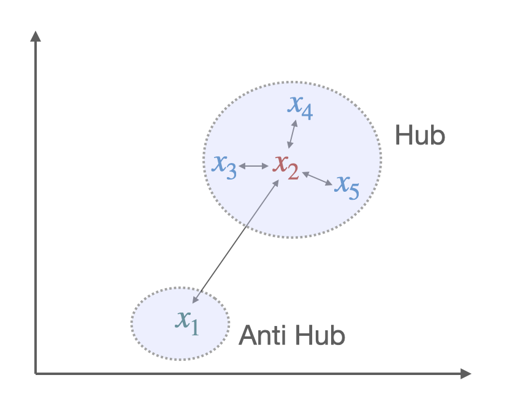
Two solutions to this problem have been brought through new criteria, aiming to give similarity measure between two embeddings, thus matching them appropriately. Among them, the most popular is Cross-Domain Similarity Local Scaling (CSLS) [10]. Others exist, such as Inverted Softmax (ISF)[13]. Yet, they usually require to estimate noisy parameter in an unsupervised setting where we do not have a direct cross-validation criterion.
The idea behind CSLS is quite simple: it is a matter of calculating a cosine similarity between the two vectors, subtracting a penalty if one or both of the vectors is also similar at many other points.
More formally, we denote by $\mathcal{N}_{\mathrm{T}} (\mathbf{W} x_s)$ the neighboors of $\boldsymbol{x}_S$ for the target language, after the alignment (hence the presence of $\mathbf{W}$).
Similarly we denote by $\mathcal{N}_{\mathrm{S}}(y_t)$ the neighborhood associated with a word $t$ of the target language. The penalty term we consider is the mean similarity of a source embedding $x_s$ to its target neighborhood:
where cos(…) is the cosine similarity.
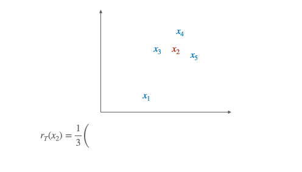
Likewise we denote by $r_{\mathrm{S}}\left(y_{t}\right)$ the mean similarity of a target word $y_{t}$ to its neighborhood. Finally, the CSLS is defined as:
However, it may seem irrelevant to align the embedding words with the NN criterion metric and to use the CSLS criterion in the inference phase. Indeed, it creates a discrepancy between the learning of the translation model and the inference: the global minimum on the set of vectors of one does not necessarily correspond to one of the other. This naturally led to modify the least-square optimization problem to propose a loss function associated with CSLS.
By assuming that word vectors are $\ell_{2}-$ normalized, we have:
Similarly, we have:
Therefore, finding the $k$ nearest neighbors of $\mathbf{W} \mathbf{x}_i$ among the elements of $\mathbf{Y}$ is equivalent to finding the $k$ elements of $\mathbf{Y}$ which have the largest dot product with $\mathbf{W} \mathbf{x}_i$. This equivalent formulation is adopted because it leads to a convex formulation when relaxing the orthogonality constraint on $\mathbf{W}$. This optimization problem with the Relaxed CSLS loss (RCSLS) is written as:
A convex relaxation can then be computed by considering the convex hull of $\mathcal{O}_d$, i.e., the unit ball of the spectral norm. The results of the papers [10] point out that RCSLS outperforms state of the art by, on average, 3 to 4% in accuracy compared to benchmark. This shows the importance of using the same criterion during training and inference.
Such an improvement using a relatively simple deterministic function led us to wonder whether we could go even further in improving performance. More precisely, considering Word translation as a retrieval task, the framework implemented was that of a ranking problem. To find the right translation, it was essential to optimally rank potential candidates. This naturally led us to want to clearly define this ranking problem and use the state of the art research on raking to tackle it. In this framework, the use of simple deterministic criteria such as NN, CSLS, or ISF was a low-tech answer and left a large field of potential improvement to be explored.
However, we wanted to keep the unsupervised framework, hence the idea of training the learning to rank algorithms on the learning of the translation of a language pair, English-Spanish, for instance, assuming the existence of a dictionary. This would then allow us to apply the learning to rank algorithm for another language pair without a dictionary, English-Italian, for instance. Similarly to the case of CSLS, the criterion can be tested first at the end of the alignment carried out thanks to the Procrustes-Wasserstein method. Then, in a second step, it can be integrated directly through the loss function in the alignment step. The following will quickly present the learning to rank framework to understand our implementation in more detail.
Learning to Rank
A ranking problem is defined as the task of ordering a set of items to maximize the utility of the entire set. Such a question is widely studied in several domains, such as Information Retrieval or Natural Language Processing. For example, on any e-commerce website, when given a query “iPhone black case” and the list of available products, the return list should be ordered by the probability of getting purchased. One can start understanding why a ranking problem is different than a classification or a regression task. While their goal is to predict a class or a value, the ranking task needs to order an entire list, such that the higher you are, the more relevant you should be.
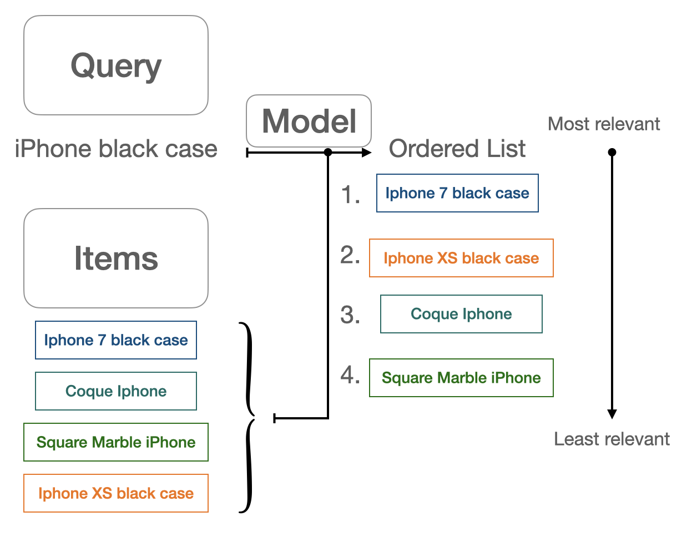
Theoretical framework
Let’s start by diving into the theoretical framework of Learning to Rank. Let $\psi := { (X,Y) \in \mathcal{X}^n \times \mathbb{R}^{n}_{+}}$ be a training set, where:
- $X \in \mathcal{X}^n$ is a vector, also defined as $(x_1,…,x_n)$ where $x_i$ is an item.
- $Y \in \mathbb{R}^{n}_{+}$ is a vector, also defined as $(y_1,…,y_n)$ where $y_i$ is a relevance labels.
- $\mathcal{X}$ is the space of all items.
Furthermore, we define an item $x \in \mathcal{X}$ as a query-documents pair $(q,d)$.
The goal is to find a scoring function $f : \mathcal{X}^n \rightarrow \mathbb{R}^{n}_{+}$ that would minimizes the following loss :
where $l : (\mathbb{R}^{n}_{+})^2 \rightarrow \mathbb{R}$ is a local loss function.
One first et very important note is how $f$ is defined. This could be done in two ways:
- We consider $f$ as a univariate scoring function, meaning that it can be decomposed into a per-item scoring function with $u : x \mapsto \mathbb{R}_+$. We will have $f(X) = [u(x_0), \cdots , u(x_n)]$.
- We consider $f$ as a multivariate scoring function, meaning that each item is scored relatively to every other item in the set, with $f$ in $\mathbb{R}^{n}_{+}$. This means that changing one item could change the score of the rest of the set.
While the first option is simpler to implement, the second one is much closer to reality, as an item’s relevance often depends on the distribution its in. For example, an article’s relevance to an e-commerce query will always depend on what the website offers you next to it.
We now have to define some metrics in order to judge how good a ranking is. We start by defining the Discounted Cumulativ Gain (DCG) of a list:
where:
- $Y = (y_1,…,y_n)$ are the ground truth labels
- $\pi(j)$ is the rank of the j-th item in X
- $\frac{1}{ln_{2}(1+\pi(j))}$ is the discount factor
- $k$ is how much we want to go deep into the list. A low value of $k$ means that we want to focus on how well ranked the start of our list is.
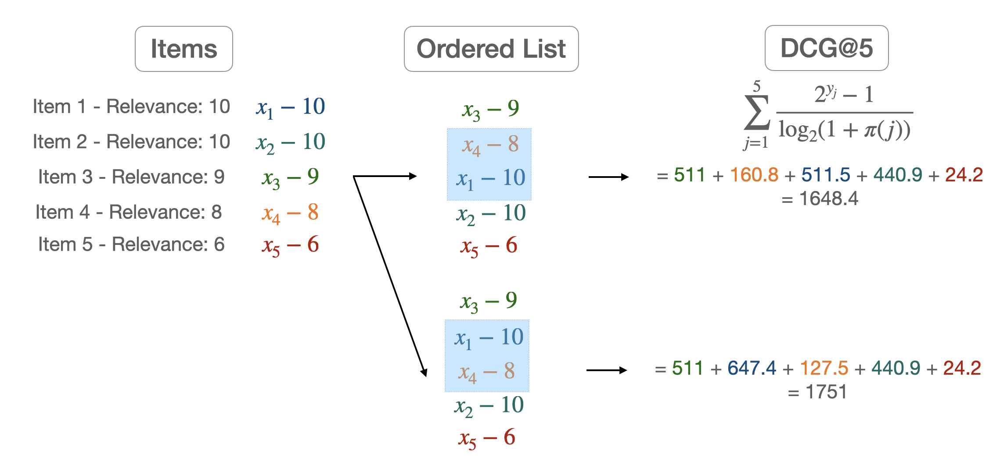
Most of the time however we want to compare this metric to the DCG obtained from the ground truth labels. We then define:
where $\pi^*$ is the item permutations induced by Y.
Loss functions
In
we defined $l$ as a loss function between two ordered sets of items. One approach could be to use the metrics defined above, but as they are non-differentiable, this is not a feasible choice. Therefore, we have to develop some sort of surrogate loss function, differentiable, and with the same goal as our metric. Before diving into the possible approaches, one must define what pointwise, pairwise, and listwise loss functions are.
A pointwise loss will only compare one predicted label to the real one. Therefore, each item’s label is not compared to any other piece of information. A pairwise loss will compare 2 scores from 2 items at the same time. With the pairwise loss, a model will minimize the number of pairs in the wrong order relative to the proper labels. A listwise loss can capture differences in scores throughout the entire list of items. While this is a more complex approach, it allows us to compare each score against the others.
Let’s give an example for each sort of loss function, starting with a pointwise one. The sigmoid cross entropy for binary relevance labels can be defined as:
where $p_j = \frac{1}{1 + e^{-\hat y_j}}$ and $\hat Y$ is the predicted labels for each item from one model.
The pairwise logistic loss [1] is a pairwise loss function that compares if pair of items are ordered in the right order. We can define it as:
where $\mathbb{I}_{x}$ is the indicator function.
Finally, a listwise loss function like the Softmax cross-entropy [2] can be defined as:
All of these loss functions are surrogates that try to capture the goal of our metrics. Another approach would be to define a listwise loss function, as close as our metrics as possible. For example, one could try to build a differentiable version of the NDCG [3]
ApproxNDCG: a differentiable NDCG
Let’s take a query $q$, and define several useful functions:
the relevance of an item $x$ regarding of the fixed query $q$, and
the position of $x$ in the ranked list $\pi$ and finally, $\mathbb{I}_{{\pi(x) \leq k}}$ still represents the indicator function of the set ${\pi(x) \leq k}$. The idea is to use an differentiable approximation of the indicator function. One can show that we have the following approximation:
where $\alpha$ is a hyperparameter.
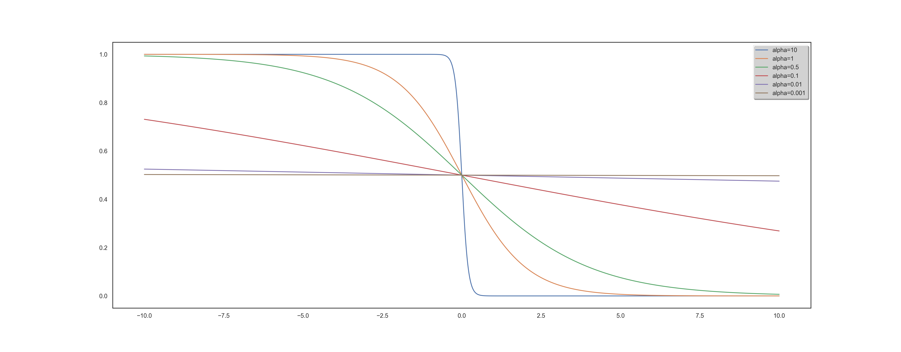
For a fixed query, we can re-define the DCG metric with the following equality :
We now have to get an approximation of the $\pi$ function. The idea here is to get back to an indicator function since it is possible to compute them. We will be using the following equality :
where $s_x$ is defined as the score given to $x$ according to $f$, and define an approximation of $\pi$ with:
We can now define our differentiable version of the DCG metric by using these approximations.
RUBI: Ranked Unsupervised Bilingual Induction
Motivations: Let’s describe more precisely the functioning of our algorithm. Two points guided our approach:
- From a linguistic point of view, there is obviously a learning to learn phenomenon for languages. We observe that by assimilating the structure of the new language, its grammar, and vocabulary to one of the already known languages, it is easier for us to create links that help learning. It is the search for these links that motivate us. We are convinced that they can be useful when inferring vocabulary.
- Improvement induced by using the CSLS criterion suggests that there are complex geometrical phenomena (going beyond the existence as mentioned above of hubs) within the representations of languages, both ante, and post-alignment. Understanding these phenomena can lead to significantly increased efficiency.
Framework: Our goal is the same as for unsupervised bilingual alignment: we have a source language A and a target language B with no parallel data between the two. We want to derive an A-B dictionary, a classic BLI task. Our study’s specificity is to assume that we also have a C language and an A-C dictionary at our disposal. To set up the learning to learn procedure, we proceed in 2 steps:
- Learning: Using the Procrustes-Wasserstein algorithm, we align languages A and C in an unsupervised way. We then build a corpus of queries between the words from language A known from our dictionary and their potential translation into language C. Classical methods proposed the translation that maximized the NN or CSLS criteria. We use deep learning as part of our learning to rank framework to find a more complex criterion. One of the innovative features of our work is, therefore, to allow access to a much larger class of functions for the vocabulary induction stage. A sub-part of the dictionary is used for cross-validation. The way of rating the relevance of the potential translations, the inputs of the algorithm, the loss functions are all parameters that we studied and that are described in the next section.
- Prediction: We thus have at the end of the training an algorithm taking as input a vocabulary word, in the form of an embedding and a list of potential translations. Our algorithm’s output is the list sorted according to the learned criteria of these possible translations, the first word corresponding to the most probable translation, and so on. We first perform the alignment of languages A and B using the Procrustes-Wasserstein algorithm again. In a second step, thanks to the learning to rank, we perform the lexicon induction step.
Finally, a final conceptual point is important to raise. In the context of the CSLS criterion, we have seen in the above that its use after alignment has improved. However, actually incorporating it in the alignment phase by modifying the loss function has allowed for greater consistency and a second improvement. However, these two changes were separated. Yet, the learning to rank framework is quite different. The main reason is the non-linearity resulting from deep-learning, unlike CSLS. Therefore, the global optimization is much more complex and does not allow relaxation to get back to a convex case. However, it is an area for improvement to be considered very seriously for future work.
Results
We can split our results into two very distinct parts. They both depend on how the Learning to Rank item sets are built. Given a word, you can build the list of potential traduction from a CSLS criterion and then force or not the right translation presence. This choice needs to be discussed thoroughly. First, let’s quickly present some results with and without the correct prediction forced in the query.
With the forced prediction
| Method | EN-ES | ES-EN | EN-FR | FR-EN |
|---|---|---|---|---|
| Wass. Proc. - NN | 77.2 | 75.6 | 75.0 | 72.1 |
| Wass. Proc. - CSLS | 79.8 | 81.8 | 79.8 | 78.0 |
| Wass. Proc. - ISF | 80.2 | 80.3 | 79.6 | 77.2 |
| Adv. - NN | 69.8 | 71.3 | 70.4 | 61.9 |
| Adv. -CSLS | 75.7 | 79.7 | 77.8 | 71.2 |
| RCSLS+spectral | 83.5 | 85.7 | 82.3 | 84.1 |
| RCSLS | 84.1 | 86.3 | 83.3 | 84.1 |
| RUBI | 93.3 (DE) | 91.6 (FR) | 93.8 (NL) | 91.9 (IT) |
| EN-DE | DE-EN | EN-RU | RU-EN | |
| Wass. Proc. - NN | 66.0 | 62.9 | 32.6 | 48.6 |
| Wass. Proc. - CSLS | 69.4 | 66.4 | 37.5 | 50.3 |
| Wass. Proc. - ISF | 66.9 | 64.2 | 36.9 | 50.3 |
| Adv. - NN | 63.1 | 59.6 | 29.1 | 41.5 |
| Adv. -CSLS | 70.1 | 66.4 | 37.2 | 48.1 |
| RCSLS+spectral | 78.2 | 75.8 | 56.1 | 66.5 |
| RCSLS | 79.1 | 76.3 | 57.9 | 67.2 |
| RUBI | 93.6 (HU) | 89.8 (FR) | 83.7 (HU) | - |
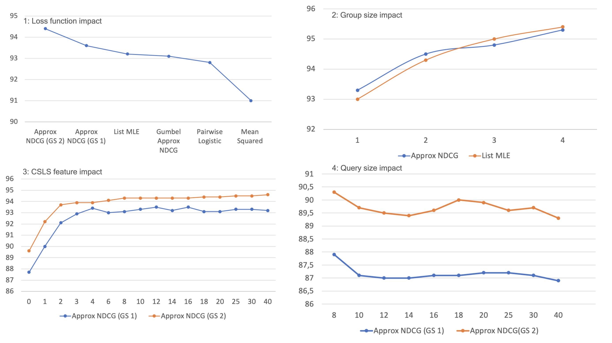
1: Loss function impact - Loss used for the Learning to Rank model. In other experiments, we found that ApproxNDCG and List MLE continue to perform similarly, hence our default choice of Approx NDCG.
2: Group size impact - The group size measures how many items the Learning to Rank model takes as input simultaneously (multivariate vs. univariate). However, the dilemma is to optimize the computation time because increasing the group size exponentially increases the number of calculations.
3: CSLS feature impact - The features for each potential translation in a query can incorporate several elements:
- the word embedding of the potential translation (size 300)
- the word embedding of the query (size 300)
- pre-computed features such as distance to query word in the aligned vector space, CSLS distance, ISF…
Those features are crucial for learning as it will entirely rely on it. At first, we decided to only use the word embedding of the potential translation and the query. That gave us a 600 feature list. However, after several experiments, we noticed that the learning to rank algorithm, despite the variation of the parameters, could not learn relevant information from these 600 features, the performance was poor. The function learned through deep learning was less efficient than a simple Euclidean distance between the potential translation and the query (NN criterion). In fact, after consulting the literature, we realized that using such a number of features is not very common. Most algorithms were only using pre-computed features (often less than a hundred). Although this information is already interesting in itself, we, therefore, turned to the second approach. We chose to restrict ourselves to certain well-specified types of pre-computed features to evaluate their full impact. More precisely, for a fixed k parameter, we provided as features the euclidean distance to the query and the CSLS(i) “distance” for i ranging from 1 to k. In other words, we provided information about the neighborhood through the penalties described in the section on CSLS. Training with the full embeddings was also performed but did not lead to any improvements.
4: Query size impact - Number of potential translations given with a query (number of items). There is a low incidence of the number of queries on the results, a very slight but perceptible decrease. Therefore, the algorithm is able, despite a large number of candidates, to discern the correct information.
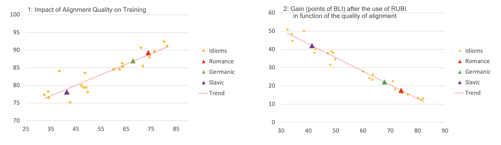
Plot of the BLI criterion in the training step according to the CSLS criterion, i.e., the quality of the language’s alignment for learning with English. The trend that emerges is that of a very clear positive correlation (linear trend plotted in red, (R ^2 = 0.82)). We have also shown the averages per language family (Romance, Germanic and Uralic). In conclusion, it seems easier to learn using a language that is well-aligned with English. Although this seems logical, it is not that obvious. Three clusters seem to appear in conjunction with the different families. Romance languages are associated with a high rate of alignment with English and, therefore, with high performance in the learning stage. The Germanic language cluster has a lower performance combined with a slightly lower quality alignment. Knowing that English belongs to the Germanic language type, it is interesting to note this slight underperformance in alignment compared to Romance. Finally, the Slave cluster shows the worst performance in terms of alignment with English and, therefore, also the worst for the learning step.
Without forced prediction
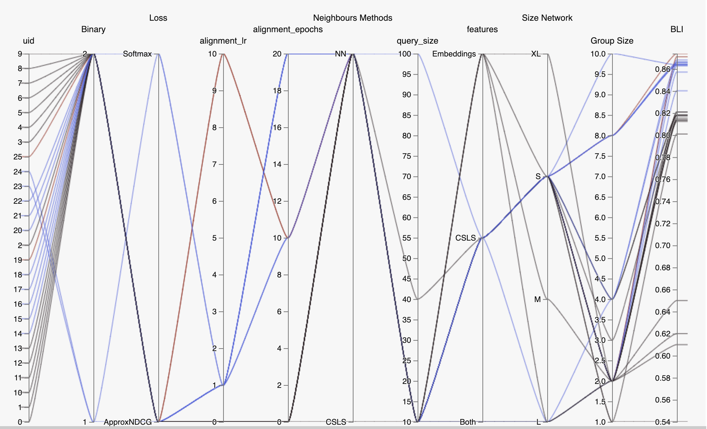
Without going into too many details, the same trends as above appear here and hold even when the proper translation is not artificially added to the query.
The main difference comes from the value of the BLI results: we only achieve the same results as the state of the art, or slightly better. We discuss in the conclusion the implication of these results, and especially the importance of forcing the right translation to appear in each query.
Conclusion
If in the Learning to rank framework, a query without at least one relevant item doesn’t have a lot of sense, this is not something one can ensure when working with unsupervised translation. If it is clear that given a query where the correct translation appears, a Learning to Rank model surpasses existing methods, it is still unclear on how to achieve such a query every time. While one way could be to extend the query size drastically, one still has to keep in mind the memory capability of such a model. Another bias might come from every query where the correct translation does not appear naturally (thus always giving poor results to every model except “forced translation” model).
We believe that leveraging the knowledge of previous idioms acquisition can keep leading to many improvements over existing models. This could be achieved thanks to Learning to Rank.
References
1: CHEN, WEI, YAN LIU, TIE, LAN, YANYAN, MING MA, ZHI & LI, HANG 2009 Ranking measures and loss functions in learning to rank. In Advances in Neural Information Processing Systems 22 (ed. Y. Bengio, D. Schuurmans, J. D. Lafferty, C. K. I. Williams & A. Culotta), pp. 315–323. Curran Associates, Inc
2: CAO, ZHE, QIN, TAO, LIU, TIE-YAN, TSAI, MING-FENG & LI, HANG 2007 Learn- ing to rank: From pairwise approach to listwise approach. In Proceedings of the 24th International Conference on Machine Learning, pp. 129–136. New York, NY, USA: ACM.
3: QIN et al. A general approximation framework for direct optimization of information retrieval measures.
4: Ilya Sutskever, Thomas Mikolov, Kai Chen, Greg Corrado, Jeffrey Dean 2013. Distributed Representations of Words and Phrases and their Compositionality
5: Quentin Berthet, Edouard Grave and Armand Joulin: Unsupervised Alignment of Embeddings with Wasserstein Procrustes, 2018
6: Cédric Villani. Topics in optimal transportation. Number 58. American Mathematical Soc., 2003.
7: David Alvarez-Melis and Tommi Jaakkola. Gromov-wasserstein alignment of word embedding spaces. In Proceedings of the 2018 Conference on Empirical Methods in Natural Language Processing, 2018.
8: Mikhail Gromov. Metric structures for Riemannian and non-Riemannian spaces. Springer Science & Business Media, 2007.
9: Ian Goodfellow, Jean Pouget-Abadie, Mehdi Mirza, Bing Xu, David Warde-Farley, Sherjil Ozair, Aaron Courville, and Yoshua Bengio. Generative adversarial nets. Advances in neural information processing systems, pp. 2672–2680, 2014.
10: Conneau, A., Lample, G., Ranzato, M., Denoyer, L., and Jégou, H: Word translation without parallel data, 2017
11: Jean Alaux, Edouard Grave, Marco Cuturi and Armand Joulin: Unsupervised hyperaligment for multilingual word embeddings, 2019
12: Georgiana Dinu, Angeliki Lazaridou, and Marco Baroni. Improving zero-shot learning by mitigating the hubness problem. International Conference on Learning Representations, Workshop Track, 2015.
13: Smith, S. L., Turban, D. H., Hamblin, S., and Hammerla, N. Y.: Bilingual word vectors, orthogonal transformations and the inverted softmax., 2017
Gauthier Guinet
PhD Candidate
I seek to explore how mathematical and computational techniques can help us understand, predict and ultimately improve human behavior in challenging situations.